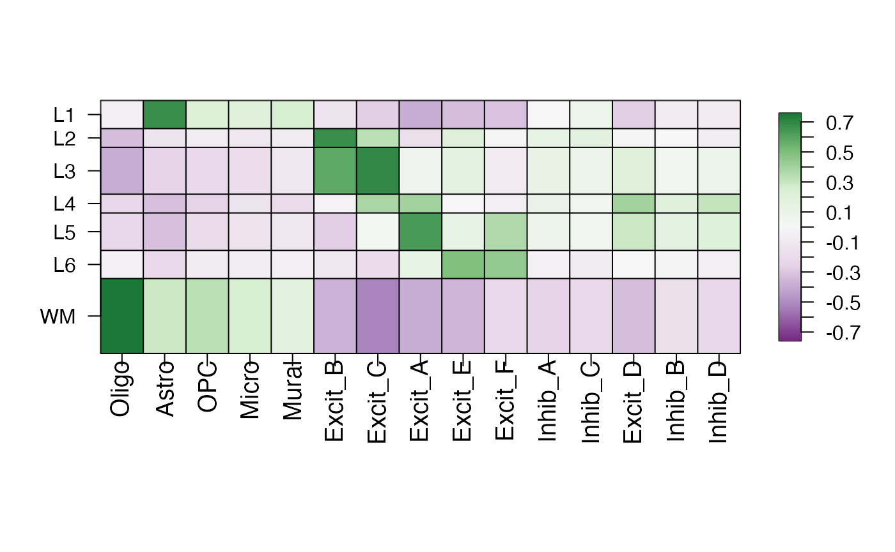

Guide to Spatial Registration
Louise Huuki-Myers
Lieber Institute for Brain Developmentlahuuki@gmail.com
17 July 2024
Source:vignettes/guide_to_spatial_registration.Rmd
guide_to_spatial_registration.RmdWhat is Spatial Registration?
Spatial Registration is an analysis that compares the gene expression of groups in a query RNA-seq data set (typically spatially resolved RNA-seq or single cell RNA-seq) to groups in a reference spatially resolved RNA-seq data set (such annotated anatomical features).
For spatial data, this can be helpful to compare manual annotations, or annotating clusters. For scRNA-seq data it can check if a cell type might be more concentrated in one area or anatomical feature of the tissue.
The spatial annotation process correlates the -statistics from the gene enrichment analysis between spatial features from the reference data set, with the -statistics from the gene enrichment of features in the query data set. Pairs with high positive correlation show where similar patterns of gene expression are occurring and what anatomical feature the new spatial feature or cell population may map to.
Overview of the Spatial Registration method
Perform gene set enrichment analysis between spatial features (ex. anatomical features, histological layers) on reference spatial data set. Or access existing statistics.
Perform gene set enrichment analysis between features (ex. new annotations, data-driven clusters) on new query data set.
Correlate the -statistics between the reference and query features.
Annotate new spatial features with the most strongly associated reference feature.
Plot correlation heat map to observe patterns between the two data sets.

How to run Spatial Registration with spatialLIBD
tools
Introduction.
In this example we will utilize the human DLPFC 10x Genomics Visium dataset from Maynard, Collado-Torres et al. (Maynard, Collado-Torres, Weber, Uytingco, Barry, Williams, II, Tran, Besich, Tippani, Chew, Yin, Kleinman, Hyde, Rao, Hicks, Martinowich, and Jaffe, 2021) as the reference. This data contains manually annotated features: the six cortical layers + white matter present in the DLPFC. We will use the pre-calculated enrichment statistics for the layers, which are available from spatialLIBD.

The query dataset will be the DLPFC single nucleus RNA-seq (snRNA-seq) data from (Tran, Maynard, Spangler, Huuki, Montgomery, Sadashivaiah, Tippani, Barry, Hancock, Hicks, Kleinman, Hyde, Collado-Torres, Jaffe, and Martinowich, 2021).
We will compare the gene expression in the cell type populations of the query dataset to the annotated layers in the reference.
Important Notes
Required knowledge
It may be helpful to review Introduction to spatialLIBD vignette available through GitHub or Bioconductor for more information about this data set and R package.
Citing spatialLIBD
We hope that spatialLIBD will be useful for your research. Please use the following information to cite the package and the overall approach. Thank you!
## Citation info
citation("spatialLIBD")
#> To cite package 'spatialLIBD' in publications use:
#>
#> Pardo B, Spangler A, Weber LM, Hicks SC, Jaffe AE, Martinowich K,
#> Maynard KR, Collado-Torres L (2022). "spatialLIBD: an R/Bioconductor
#> package to visualize spatially-resolved transcriptomics data." _BMC
#> Genomics_. doi:10.1186/s12864-022-08601-w
#> <https://doi.org/10.1186/s12864-022-08601-w>,
#> <https://doi.org/10.1186/s12864-022-08601-w>.
#>
#> Maynard KR, Collado-Torres L, Weber LM, Uytingco C, Barry BK,
#> Williams SR, II JLC, Tran MN, Besich Z, Tippani M, Chew J, Yin Y,
#> Kleinman JE, Hyde TM, Rao N, Hicks SC, Martinowich K, Jaffe AE
#> (2021). "Transcriptome-scale spatial gene expression in the human
#> dorsolateral prefrontal cortex." _Nature Neuroscience_.
#> doi:10.1038/s41593-020-00787-0
#> <https://doi.org/10.1038/s41593-020-00787-0>,
#> <https://www.nature.com/articles/s41593-020-00787-0>.
#>
#> Huuki-Myers LA, Spangler A, Eagles NJ, Montgomergy KD, Kwon SH, Guo
#> B, Grant-Peters M, Divecha HR, Tippani M, Sriworarat C, Nguyen AB,
#> Ravichandran P, Tran MN, Seyedian A, Consortium P, Hyde TM, Kleinman
#> JE, Battle A, Page SC, Ryten M, Hicks SC, Martinowich K,
#> Collado-Torres L, Maynard KR (2024). "A data-driven single-cell and
#> spatial transcriptomic map of the human prefrontal cortex."
#> _Science_. doi:10.1126/science.adh1938
#> <https://doi.org/10.1126/science.adh1938>,
#> <https://doi.org/10.1126/science.adh1938>.
#>
#> Kwon SH, Parthiban S, Tippani M, Divecha HR, Eagles NJ, Lobana JS,
#> Williams SR, Mark M, Bharadwaj RA, Kleinman JE, Hyde TM, Page SC,
#> Hicks SC, Martinowich K, Maynard KR, Collado-Torres L (2023).
#> "Influence of Alzheimer’s disease related neuropathology on local
#> microenvironment gene expression in the human inferior temporal
#> cortex." _GEN Biotechnology_. doi:10.1089/genbio.2023.0019
#> <https://doi.org/10.1089/genbio.2023.0019>,
#> <https://doi.org/10.1089/genbio.2023.0019>.
#>
#> To see these entries in BibTeX format, use 'print(<citation>,
#> bibtex=TRUE)', 'toBibtex(.)', or set
#> 'options(citation.bibtex.max=999)'.Setup
Install spatialLIBD
if (!requireNamespace("BiocManager", quietly = TRUE)) {
install.packages("BiocManager")
}
BiocManager::install("spatialLIBD")
## Check that you have a valid Bioconductor installation
BiocManager::valid()Load required packages
library("spatialLIBD")
library("SingleCellExperiment")Download Data
Spatial Reference
The reference data is easily accessed through spatialLIBD.
The modeling results for the annotated layers is already calculated and
can be accessed with the fetch_data() function.
This data contains the results form three models (anova, enrichment, and pairwise), we will use the enrichment results for spatial registration. The tables contain the -statistics, p-values, and gene ensembl ID and symbol.
## get reference layer enrichment statistics
layer_modeling_results <- fetch_data(type = "modeling_results")
#> 2024-07-17 13:54:13.294755 loading file /github/home/.cache/R/BiocFileCache/4981423d30a_Human_DLPFC_Visium_modeling_results.Rdata%3Fdl%3D1
layer_modeling_results$enrichment[1:5, 1:5]
#> t_stat_WM t_stat_Layer1 t_stat_Layer2 t_stat_Layer3 t_stat_Layer4
#> 1 -0.6344143 -1.0321320 0.1781501 -0.72835965 1.56703859
#> 2 -2.4758891 1.2232062 -0.8733745 1.93793650 1.33150141
#> 3 -3.0079360 -0.8564572 2.1335852 0.48741121 0.35212807
#> 4 -1.2916584 -0.9494234 -0.9485440 0.56378302 -0.11206713
#> 5 2.3175897 0.6156900 0.1127478 -0.09907566 -0.03376771Query Data: snRNA-seq
For the query data set, we will use the public single nucleus RNA-seq (snRNA-seq) data from (Tran, Maynard, Spangler et al., 2021) can be accessed on github.
This data is also from postmortem human brain DLPFC, and contains gene expression data for 11k nuclei and 19 cell types.
We will use BiocFileCache() to cache this data. It is
stored as a SingleCellExperiment object named
sce.dlpfc.tran, and takes 1.01 GB of RAM memory to
load.
# Download and save a local cache of the data available at:
# https://github.com/LieberInstitute/10xPilot_snRNAseq-human#processed-data
bfc <- BiocFileCache::BiocFileCache()
url <- paste0(
"https://libd-snrnaseq-pilot.s3.us-east-2.amazonaws.com/",
"SCE_DLPFC-n3_tran-etal.rda"
)
local_data <- BiocFileCache::bfcrpath(url, x = bfc)
load(local_data, verbose = TRUE)
#> Loading objects:
#> sce.dlpfc.tranDLPFC tissue consists of many cell types, some are quite rare and will not have enough data to complete the analysis
table(sce.dlpfc.tran$cellType)
#>
#> Astro Excit_A Excit_B Excit_C Excit_D Excit_E Excit_F
#> 782 529 773 524 132 187 243
#> Inhib_A Inhib_B Inhib_C Inhib_D Inhib_E Inhib_F Macrophage
#> 333 454 365 413 7 8 10
#> Micro Mural Oligo OPC Tcell
#> 388 18 5455 572 9The data will be pseudo-bulked over donor x
cellType, it is recommended to drop groups with < 10
nuclei (this is done automatically in the pseudobulk step).
table(sce.dlpfc.tran$donor, sce.dlpfc.tran$cellType)
#>
#> Astro Excit_A Excit_B Excit_C Excit_D Excit_E Excit_F Inhib_A Inhib_B
#> donor1 371 111 75 44 22 77 102 39 98
#> donor2 137 120 154 155 27 25 36 89 106
#> donor6 274 298 544 325 83 85 105 205 250
#>
#> Inhib_C Inhib_D Inhib_E Inhib_F Macrophage Micro Mural Oligo OPC
#> donor1 47 119 2 0 1 152 3 2754 196
#> donor2 56 78 2 1 3 92 2 517 91
#> donor6 262 216 3 7 6 144 13 2184 285
#>
#> Tcell
#> donor1 2
#> donor2 2
#> donor6 5Get Enrichment statistics for snRNA-seq data
spatialLIBD contains many functions to compute
modeling_results for the query sc/snRNA-seq or spatial
data.
The process includes the following steps
-
registration_pseudobulk(): Pseudo-bulks data, filter low expressed genes, and normalize counts -
registration_mod(): Defines the statistical model that will be used for computing the block correlation -
registration_block_cor(): Computes the block correlation using the sample ID as the blocking factor, used as correlation in eBayes call -
registration_stats_enrichment(): Computes the gene enrichment -statistics (one group vs. All other groups)
The function registration_wrapper() makes life easy by
wrapping these functions together in to one step!
## Perform the spatial registration
sce_modeling_results <- registration_wrapper(
sce = sce.dlpfc.tran,
var_registration = "cellType",
var_sample_id = "donor",
gene_ensembl = "gene_id",
gene_name = "gene_name"
)
#> 2024-07-17 13:54:21.031386 make pseudobulk object
#> 2024-07-17 13:54:22.727446 dropping 13 pseudo-bulked samples that are below 'min_ncells'.
#> 2024-07-17 13:54:22.789323 drop lowly expressed genes
#> 2024-07-17 13:54:22.963372 normalize expression
#> 2024-07-17 13:54:24.427132 create model matrix
#> 2024-07-17 13:54:24.451001 run duplicateCorrelation()
#> 2024-07-17 13:54:37.623842 The estimated correlation is: 0.138734774807097
#> 2024-07-17 13:54:37.626295 computing enrichment statistics
#> 2024-07-17 13:54:38.79442 extract and reformat enrichment results
#> 2024-07-17 13:54:38.851417 running the baseline pairwise model
#> 2024-07-17 13:54:39.041435 computing pairwise statistics
#> 2024-07-17 13:54:40.421524 computing F-statisticsExtract Enrichment t-statistics
## extract t-statics and rename
registration_t_stats <- sce_modeling_results$enrichment[, grep("^t_stat", colnames(sce_modeling_results$enrichment))]
colnames(registration_t_stats) <- gsub("^t_stat_", "", colnames(registration_t_stats))
## cell types x gene
dim(registration_t_stats)
#> [1] 18620 15
## check out table
registration_t_stats[1:5, 1:5]
#> Astro Excit_A Excit_B Excit_C Excit_D
#> ENSG00000238009 -0.71009456 0.7957792 0.0497619 0.6825793 0.5526941
#> ENSG00000237491 -4.24672326 1.7724150 1.6819367 0.9047336 2.8222782
#> ENSG00000225880 0.06152726 0.6941825 0.9819037 -0.1958094 -0.7766439
#> ENSG00000223764 7.69037575 -0.4106009 -0.4107015 -0.4106542 -0.4107933
#> ENSG00000187634 10.14422194 -0.4721603 0.2733466 -0.1397438 -1.0111055Correlate statsics with Layer Reference
cor_layer <- layer_stat_cor(
stats = registration_t_stats,
modeling_results = layer_modeling_results,
model_type = "enrichment",
top_n = 100
)
cor_layer
#> WM Layer6 Layer5 Layer4 Layer3
#> Oligo 0.7536847 -0.038947167 -0.22313462 -0.216143460 -0.39418956
#> Astro 0.2902852 -0.215372148 -0.32009814 -0.320189919 -0.24920587
#> OPC 0.3309766 -0.076892980 -0.19246279 -0.254222683 -0.21417502
#> Micro 0.2548264 -0.066391136 -0.14907964 -0.132236668 -0.18353524
#> Mural 0.1652788 -0.046487411 -0.12107471 -0.190269592 -0.11924637
#> Excit_B -0.3718199 -0.119246604 -0.26805619 -0.034391012 0.57980667
#> Excit_C -0.5232250 -0.187359062 0.01974092 0.381935813 0.69540412
#> Excit_A -0.3902148 0.128043074 0.63735797 0.405168995 0.06011232
#> Excit_E -0.3651414 0.489930498 0.13044242 -0.001907714 0.15141352
#> Excit_F -0.2108888 0.443748447 0.35812706 -0.064476608 -0.09199288
#> Inhib_A -0.2497876 -0.035402374 0.08242644 0.105770587 0.12358824
#> Inhib_C -0.2100641 -0.080878595 0.05282252 0.052311336 0.09462094
#> Excit_D -0.3363905 -0.004936028 0.29430601 0.402875525 0.19153576
#> Inhib_B -0.1574240 -0.016415116 0.15172576 0.190096545 0.05317902
#> Inhib_D -0.2224211 -0.062788566 0.20260766 0.314434866 0.08963108
#> Layer2 Layer1
#> Oligo -0.336272668 -0.04559186
#> Astro -0.128017818 0.66950829
#> OPC -0.073209686 0.22845154
#> Micro -0.118307525 0.19395081
#> Mural -0.076057486 0.24642004
#> Excit_B 0.675251157 -0.12563319
#> Excit_C 0.326841133 -0.26729177
#> Excit_A -0.171933501 -0.38823893
#> Excit_E 0.194625039 -0.33496664
#> Excit_F -0.012550826 -0.30917103
#> Inhib_A 0.133982729 0.01021479
#> Inhib_C 0.160416496 0.06801709
#> Excit_D -0.014930006 -0.27248937
#> Inhib_B -0.004791031 -0.09307309
#> Inhib_D -0.067981519 -0.09229913Explore Results
Now we can use these correlation values to learn about the cell types.
Create Heatmap of Correlations
We can see from this heatmap what layers the different cell types are associated with.
Oligo with WM
Astro with Layer 1
Excitatory neurons to different layers of the cortex
Weak associate with Inhibitory Neurons
layer_stat_cor_plot(cor_layer, max = max(cor_layer))
Annotate Cell Types by Top Correlation
We can use annotate_registered_clusters to create
annotation labels for the cell types based on the correlation
values.
anno <- annotate_registered_clusters(
cor_stats_layer = cor_layer,
confidence_threshold = 0.25,
cutoff_merge_ratio = 0.25
)
anno
#> cluster layer_confidence layer_label
#> 1 Oligo good WM
#> 2 Astro good L1
#> 3 OPC good WM
#> 4 Micro good WM
#> 5 Mural poor L1*
#> 6 Excit_B good L2/3
#> 7 Excit_C good L3
#> 8 Excit_A good L5
#> 9 Excit_E good L6
#> 10 Excit_F good L6/5
#> 11 Inhib_A poor L2/3/4*
#> 12 Inhib_C poor L2*
#> 13 Excit_D good L4
#> 14 Inhib_B poor L4*
#> 15 Inhib_D good L4Reproducibility
The spatialLIBD package (Pardo, Spangler, Weber, Hicks, Jaffe, Martinowich, Maynard, and Collado-Torres, 2022) was made possible thanks to:
- R (R Core Team, 2024)
- BiocStyle (Oleś, 2024)
- knitr (Xie, 2024)
- RefManageR (McLean, 2017)
- rmarkdown (Allaire, Xie, Dervieux, McPherson, Luraschi, Ushey, Atkins, Wickham, Cheng, Chang, and Iannone, 2024)
- sessioninfo (Wickham, Chang, Flight, Müller, and Hester, 2021)
- testthat (Wickham, 2011)
This package was developed using biocthis.
Code for creating the vignette
## Create the vignette
library("rmarkdown")
system.time(render("guide_to_spatial_registration.Rmd", "BiocStyle::html_document"))
## Extract the R code
library("knitr")
knit("guide_to_spatial_registration.Rmd", tangle = TRUE)Date the vignette was generated.
#> [1] "2024-07-17 13:54:41 UTC"Wallclock time spent generating the vignette.
#> Time difference of 40.965 secsR session information.
#> ─ Session info ───────────────────────────────────────────────────────────────────────────────────────────────────────
#> setting value
#> version R version 4.4.1 (2024-06-14)
#> os Ubuntu 22.04.4 LTS
#> system x86_64, linux-gnu
#> ui X11
#> language en
#> collate en_US.UTF-8
#> ctype en_US.UTF-8
#> tz UTC
#> date 2024-07-17
#> pandoc 3.2 @ /usr/bin/ (via rmarkdown)
#>
#> ─ Packages ───────────────────────────────────────────────────────────────────────────────────────────────────────────
#> package * version date (UTC) lib source
#> abind 1.4-5 2016-07-21 [1] RSPM (R 4.4.0)
#> AnnotationDbi 1.66.0 2024-05-01 [1] Bioconductor 3.19 (R 4.4.1)
#> AnnotationHub 3.12.0 2024-04-30 [1] Bioconductor 3.19 (R 4.4.1)
#> attempt 0.3.1 2020-05-03 [1] RSPM (R 4.4.0)
#> backports 1.5.0 2024-05-23 [1] RSPM (R 4.4.0)
#> beachmat 2.20.0 2024-04-30 [1] Bioconductor 3.19 (R 4.4.1)
#> beeswarm 0.4.0 2021-06-01 [1] RSPM (R 4.4.0)
#> benchmarkme 1.0.8 2022-06-12 [1] RSPM (R 4.4.0)
#> benchmarkmeData 1.0.4 2020-04-23 [1] RSPM (R 4.4.0)
#> bibtex 0.5.1 2023-01-26 [1] RSPM (R 4.4.0)
#> Biobase * 2.64.0 2024-04-30 [1] Bioconductor 3.19 (R 4.4.1)
#> BiocFileCache 2.12.0 2024-04-30 [1] Bioconductor 3.19 (R 4.4.1)
#> BiocGenerics * 0.50.0 2024-04-30 [1] Bioconductor 3.19 (R 4.4.1)
#> BiocIO 1.14.0 2024-04-30 [1] Bioconductor 3.19 (R 4.4.1)
#> BiocManager 1.30.23 2024-05-04 [2] CRAN (R 4.4.1)
#> BiocNeighbors 1.22.0 2024-04-30 [1] Bioconductor 3.19 (R 4.4.1)
#> BiocParallel 1.38.0 2024-04-30 [1] Bioconductor 3.19 (R 4.4.1)
#> BiocSingular 1.20.0 2024-04-30 [1] Bioconductor 3.19 (R 4.4.1)
#> BiocStyle * 2.32.1 2024-06-16 [1] Bioconductor 3.19 (R 4.4.1)
#> BiocVersion 3.19.1 2024-04-17 [2] Bioconductor 3.19 (R 4.4.1)
#> Biostrings 2.72.1 2024-06-02 [1] Bioconductor 3.19 (R 4.4.1)
#> bit 4.0.5 2022-11-15 [1] RSPM (R 4.4.0)
#> bit64 4.0.5 2020-08-30 [1] RSPM (R 4.4.0)
#> bitops 1.0-7 2021-04-24 [1] RSPM (R 4.4.0)
#> blob 1.2.4 2023-03-17 [1] RSPM (R 4.4.0)
#> bookdown 0.40 2024-07-02 [1] RSPM (R 4.4.0)
#> bslib 0.7.0 2024-03-29 [2] RSPM (R 4.4.0)
#> cachem 1.1.0 2024-05-16 [2] RSPM (R 4.4.0)
#> cli 3.6.3 2024-06-21 [2] RSPM (R 4.4.0)
#> codetools 0.2-20 2024-03-31 [3] CRAN (R 4.4.1)
#> colorspace 2.1-0 2023-01-23 [1] RSPM (R 4.4.0)
#> config 0.3.2 2023-08-30 [1] RSPM (R 4.4.0)
#> cowplot 1.1.3 2024-01-22 [1] RSPM (R 4.4.0)
#> crayon 1.5.3 2024-06-20 [2] RSPM (R 4.4.0)
#> curl 5.2.1 2024-03-01 [2] RSPM (R 4.4.0)
#> data.table 1.15.4 2024-03-30 [1] RSPM (R 4.4.0)
#> DBI 1.2.3 2024-06-02 [1] RSPM (R 4.4.0)
#> dbplyr 2.5.0 2024-03-19 [1] RSPM (R 4.4.0)
#> DelayedArray 0.30.1 2024-05-07 [1] Bioconductor 3.19 (R 4.4.1)
#> DelayedMatrixStats 1.26.0 2024-04-30 [1] Bioconductor 3.19 (R 4.4.1)
#> desc 1.4.3 2023-12-10 [2] RSPM (R 4.4.0)
#> digest 0.6.36 2024-06-23 [2] RSPM (R 4.4.0)
#> doParallel 1.0.17 2022-02-07 [1] RSPM (R 4.4.0)
#> dotCall64 1.1-1 2023-11-28 [1] RSPM (R 4.4.0)
#> dplyr 1.1.4 2023-11-17 [1] RSPM (R 4.4.0)
#> DT 0.33 2024-04-04 [1] RSPM (R 4.4.0)
#> edgeR 4.2.1 2024-07-14 [1] Bioconductor 3.19 (R 4.4.1)
#> evaluate 0.24.0 2024-06-10 [2] RSPM (R 4.4.0)
#> ExperimentHub 2.12.0 2024-04-30 [1] Bioconductor 3.19 (R 4.4.1)
#> fansi 1.0.6 2023-12-08 [2] RSPM (R 4.4.0)
#> fastmap 1.2.0 2024-05-15 [2] RSPM (R 4.4.0)
#> fields 16.2 2024-06-27 [1] RSPM (R 4.4.0)
#> filelock 1.0.3 2023-12-11 [1] RSPM (R 4.4.0)
#> foreach 1.5.2 2022-02-02 [1] RSPM (R 4.4.0)
#> fs 1.6.4 2024-04-25 [2] RSPM (R 4.4.0)
#> generics 0.1.3 2022-07-05 [1] RSPM (R 4.4.0)
#> GenomeInfoDb * 1.40.1 2024-05-24 [1] Bioconductor 3.19 (R 4.4.1)
#> GenomeInfoDbData 1.2.12 2024-06-25 [1] Bioconductor
#> GenomicAlignments 1.40.0 2024-04-30 [1] Bioconductor 3.19 (R 4.4.1)
#> GenomicRanges * 1.56.1 2024-06-12 [1] Bioconductor 3.19 (R 4.4.1)
#> ggbeeswarm 0.7.2 2023-04-29 [1] RSPM (R 4.4.0)
#> ggplot2 3.5.1 2024-04-23 [1] RSPM (R 4.4.0)
#> ggrepel 0.9.5 2024-01-10 [1] RSPM (R 4.4.0)
#> glue 1.7.0 2024-01-09 [2] RSPM (R 4.4.0)
#> golem 0.4.1 2023-06-05 [1] RSPM (R 4.4.0)
#> gridExtra 2.3 2017-09-09 [1] RSPM (R 4.4.0)
#> gtable 0.3.5 2024-04-22 [1] RSPM (R 4.4.0)
#> highr 0.11 2024-05-26 [2] RSPM (R 4.4.0)
#> htmltools 0.5.8.1 2024-04-04 [2] RSPM (R 4.4.0)
#> htmlwidgets 1.6.4 2023-12-06 [2] RSPM (R 4.4.0)
#> httpuv 1.6.15 2024-03-26 [2] RSPM (R 4.4.0)
#> httr 1.4.7 2023-08-15 [2] RSPM (R 4.4.0)
#> IRanges * 2.38.1 2024-07-03 [1] Bioconductor 3.19 (R 4.4.1)
#> irlba 2.3.5.1 2022-10-03 [1] RSPM (R 4.4.0)
#> iterators 1.0.14 2022-02-05 [1] RSPM (R 4.4.0)
#> jquerylib 0.1.4 2021-04-26 [2] RSPM (R 4.4.0)
#> jsonlite 1.8.8 2023-12-04 [2] RSPM (R 4.4.0)
#> KEGGREST 1.44.1 2024-06-19 [1] Bioconductor 3.19 (R 4.4.1)
#> knitr 1.48 2024-07-07 [2] RSPM (R 4.4.0)
#> later 1.3.2 2023-12-06 [2] RSPM (R 4.4.0)
#> lattice 0.22-6 2024-03-20 [3] CRAN (R 4.4.1)
#> lazyeval 0.2.2 2019-03-15 [1] RSPM (R 4.4.0)
#> lifecycle 1.0.4 2023-11-07 [2] RSPM (R 4.4.0)
#> limma 3.60.3 2024-06-16 [1] Bioconductor 3.19 (R 4.4.1)
#> locfit 1.5-9.10 2024-06-24 [1] RSPM (R 4.4.0)
#> lubridate 1.9.3 2023-09-27 [1] RSPM (R 4.4.0)
#> magick 2.8.4 2024-07-14 [1] RSPM (R 4.4.0)
#> magrittr 2.0.3 2022-03-30 [2] RSPM (R 4.4.0)
#> maps 3.4.2 2023-12-15 [1] RSPM (R 4.4.0)
#> Matrix 1.7-0 2024-04-26 [3] CRAN (R 4.4.1)
#> MatrixGenerics * 1.16.0 2024-04-30 [1] Bioconductor 3.19 (R 4.4.1)
#> matrixStats * 1.3.0 2024-04-11 [1] RSPM (R 4.4.0)
#> memoise 2.0.1 2021-11-26 [2] RSPM (R 4.4.0)
#> mime 0.12 2021-09-28 [2] RSPM (R 4.4.0)
#> munsell 0.5.1 2024-04-01 [1] RSPM (R 4.4.0)
#> paletteer 1.6.0 2024-01-21 [1] RSPM (R 4.4.0)
#> pillar 1.9.0 2023-03-22 [2] RSPM (R 4.4.0)
#> pkgconfig 2.0.3 2019-09-22 [2] RSPM (R 4.4.0)
#> pkgdown 2.1.0 2024-07-06 [2] RSPM (R 4.4.0)
#> plotly 4.10.4 2024-01-13 [1] RSPM (R 4.4.0)
#> plyr 1.8.9 2023-10-02 [1] RSPM (R 4.4.0)
#> png 0.1-8 2022-11-29 [1] RSPM (R 4.4.0)
#> promises 1.3.0 2024-04-05 [2] RSPM (R 4.4.0)
#> purrr 1.0.2 2023-08-10 [2] RSPM (R 4.4.0)
#> R6 2.5.1 2021-08-19 [2] RSPM (R 4.4.0)
#> ragg 1.3.2 2024-05-15 [2] RSPM (R 4.4.0)
#> rappdirs 0.3.3 2021-01-31 [2] RSPM (R 4.4.0)
#> RColorBrewer 1.1-3 2022-04-03 [1] RSPM (R 4.4.0)
#> Rcpp 1.0.12 2024-01-09 [2] RSPM (R 4.4.0)
#> RCurl 1.98-1.16 2024-07-11 [1] RSPM (R 4.4.0)
#> RefManageR * 1.4.0 2022-09-30 [1] RSPM (R 4.4.0)
#> rematch2 2.1.2 2020-05-01 [2] RSPM (R 4.4.0)
#> restfulr 0.0.15 2022-06-16 [1] RSPM (R 4.4.1)
#> rjson 0.2.21 2022-01-09 [1] RSPM (R 4.4.0)
#> rlang 1.1.4 2024-06-04 [2] RSPM (R 4.4.0)
#> rmarkdown 2.27 2024-05-17 [2] RSPM (R 4.4.0)
#> Rsamtools 2.20.0 2024-04-30 [1] Bioconductor 3.19 (R 4.4.1)
#> RSQLite 2.3.7 2024-05-27 [1] RSPM (R 4.4.0)
#> rsvd 1.0.5 2021-04-16 [1] RSPM (R 4.4.0)
#> rtracklayer 1.64.0 2024-04-30 [1] Bioconductor 3.19 (R 4.4.1)
#> S4Arrays 1.4.1 2024-05-20 [1] Bioconductor 3.19 (R 4.4.1)
#> S4Vectors * 0.42.1 2024-07-03 [1] Bioconductor 3.19 (R 4.4.1)
#> sass 0.4.9 2024-03-15 [2] RSPM (R 4.4.0)
#> ScaledMatrix 1.12.0 2024-04-30 [1] Bioconductor 3.19 (R 4.4.1)
#> scales 1.3.0 2023-11-28 [1] RSPM (R 4.4.0)
#> scater 1.32.0 2024-04-30 [1] Bioconductor 3.19 (R 4.4.1)
#> scuttle 1.14.0 2024-04-30 [1] Bioconductor 3.19 (R 4.4.1)
#> sessioninfo * 1.2.2 2021-12-06 [2] RSPM (R 4.4.0)
#> shiny 1.8.1.1 2024-04-02 [2] RSPM (R 4.4.0)
#> shinyWidgets 0.8.6 2024-04-24 [1] RSPM (R 4.4.0)
#> SingleCellExperiment * 1.26.0 2024-04-30 [1] Bioconductor 3.19 (R 4.4.1)
#> spam 2.10-0 2023-10-23 [1] RSPM (R 4.4.0)
#> SparseArray 1.4.8 2024-05-24 [1] Bioconductor 3.19 (R 4.4.1)
#> sparseMatrixStats 1.16.0 2024-04-30 [1] Bioconductor 3.19 (R 4.4.1)
#> SpatialExperiment * 1.14.0 2024-05-01 [1] Bioconductor 3.19 (R 4.4.1)
#> spatialLIBD * 1.17.6 2024-07-17 [1] Bioconductor
#> statmod 1.5.0 2023-01-06 [1] RSPM (R 4.4.0)
#> stringi 1.8.4 2024-05-06 [2] RSPM (R 4.4.0)
#> stringr 1.5.1 2023-11-14 [2] RSPM (R 4.4.0)
#> SummarizedExperiment * 1.34.0 2024-05-01 [1] Bioconductor 3.19 (R 4.4.1)
#> systemfonts 1.1.0 2024-05-15 [2] RSPM (R 4.4.0)
#> textshaping 0.4.0 2024-05-24 [2] RSPM (R 4.4.0)
#> tibble 3.2.1 2023-03-20 [2] RSPM (R 4.4.0)
#> tidyr 1.3.1 2024-01-24 [1] RSPM (R 4.4.0)
#> tidyselect 1.2.1 2024-03-11 [1] RSPM (R 4.4.0)
#> timechange 0.3.0 2024-01-18 [1] RSPM (R 4.4.0)
#> UCSC.utils 1.0.0 2024-04-30 [1] Bioconductor 3.19 (R 4.4.1)
#> utf8 1.2.4 2023-10-22 [2] RSPM (R 4.4.0)
#> vctrs 0.6.5 2023-12-01 [2] RSPM (R 4.4.0)
#> vipor 0.4.7 2023-12-18 [1] RSPM (R 4.4.0)
#> viridis 0.6.5 2024-01-29 [1] RSPM (R 4.4.0)
#> viridisLite 0.4.2 2023-05-02 [1] RSPM (R 4.4.0)
#> withr 3.0.0 2024-01-16 [2] RSPM (R 4.4.0)
#> xfun 0.45 2024-06-16 [2] RSPM (R 4.4.0)
#> XML 3.99-0.17 2024-06-25 [1] RSPM (R 4.4.0)
#> xml2 1.3.6 2023-12-04 [2] RSPM (R 4.4.0)
#> xtable 1.8-4 2019-04-21 [2] RSPM (R 4.4.0)
#> XVector 0.44.0 2024-04-30 [1] Bioconductor 3.19 (R 4.4.1)
#> yaml 2.3.9 2024-07-05 [2] RSPM (R 4.4.0)
#> zlibbioc 1.50.0 2024-04-30 [1] Bioconductor 3.19 (R 4.4.1)
#>
#> [1] /__w/_temp/Library
#> [2] /usr/local/lib/R/site-library
#> [3] /usr/local/lib/R/library
#>
#> ──────────────────────────────────────────────────────────────────────────────────────────────────────────────────────Bibliography
This vignette was generated using BiocStyle (Oleś, 2024) with knitr (Xie, 2024) and rmarkdown (Allaire, Xie, Dervieux et al., 2024) running behind the scenes.
Citations made with RefManageR (McLean, 2017).
[1] J. Allaire, Y. Xie, C. Dervieux, et al. rmarkdown: Dynamic Documents for R. R package version 2.27. 2024. URL: https://github.com/rstudio/rmarkdown.
[2] K. R. Maynard, L. Collado-Torres, L. M. Weber, et al. “Transcriptome-scale spatial gene expression in the human dorsolateral prefrontal cortex”. In: Nature Neuroscience (2021). DOI: 10.1038/s41593-020-00787-0. URL: https://www.nature.com/articles/s41593-020-00787-0.
[3] M. W. McLean. “RefManageR: Import and Manage BibTeX and BibLaTeX References in R”. In: The Journal of Open Source Software (2017). DOI: 10.21105/joss.00338.
[4] A. Oleś. BiocStyle: Standard styles for vignettes and other Bioconductor documents. R package version 2.32.1. 2024. DOI: 10.18129/B9.bioc.BiocStyle. URL: https://bioconductor.org/packages/BiocStyle.
[5] B. Pardo, A. Spangler, L. M. Weber, et al. “spatialLIBD: an R/Bioconductor package to visualize spatially-resolved transcriptomics data”. In: BMC Genomics (2022). DOI: 10.1186/s12864-022-08601-w. URL: https://doi.org/10.1186/s12864-022-08601-w.
[6] R Core Team. R: A Language and Environment for Statistical Computing. R Foundation for Statistical Computing. Vienna, Austria, 2024. URL: https://www.R-project.org/.
[7] M. N. Tran, K. R. Maynard, A. Spangler, et al. “Single-nucleus transcriptome analysis reveals cell-type-specific molecular signatures across reward circuitry in the human brain”. In: Neuron (2021). DOI: 10.1016/j.neuron.2021.09.001.
[8] H. Wickham. “testthat: Get Started with Testing”. In: The R Journal 3 (2011), pp. 5–10. URL: https://journal.r-project.org/archive/2011-1/RJournal_2011-1_Wickham.pdf.
[9] H. Wickham, W. Chang, R. Flight, et al. sessioninfo: R Session Information. R package version 1.2.2, https://r-lib.github.io/sessioninfo/. 2021. URL: https://github.com/r-lib/sessioninfo#readme.
[10] Y. Xie. knitr: A General-Purpose Package for Dynamic Report Generation in R. R package version 1.48. 2024. URL: https://yihui.org/knitr/.